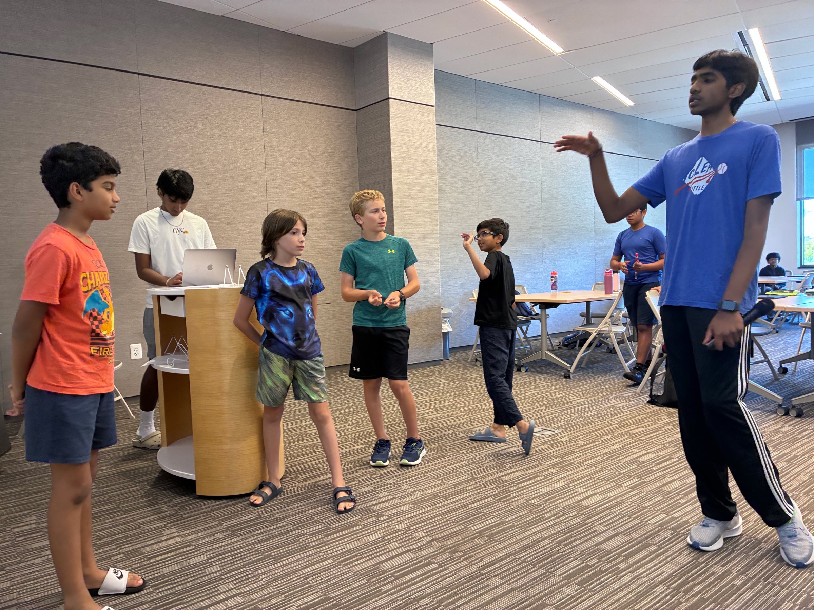
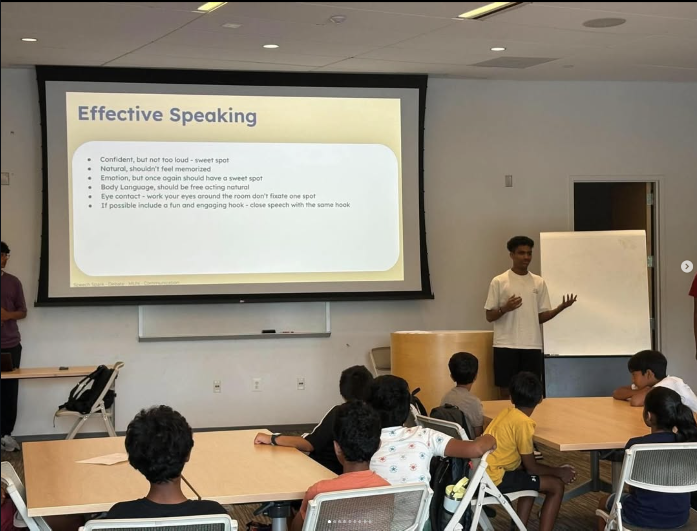
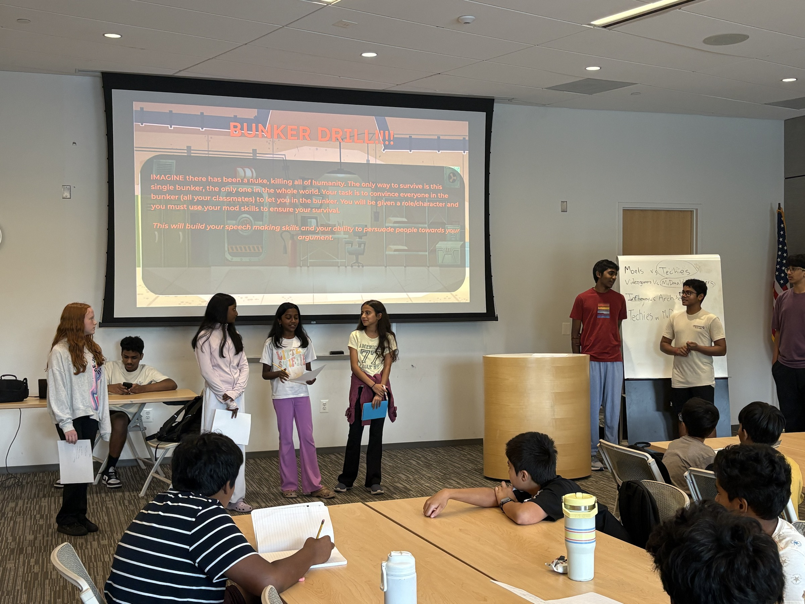
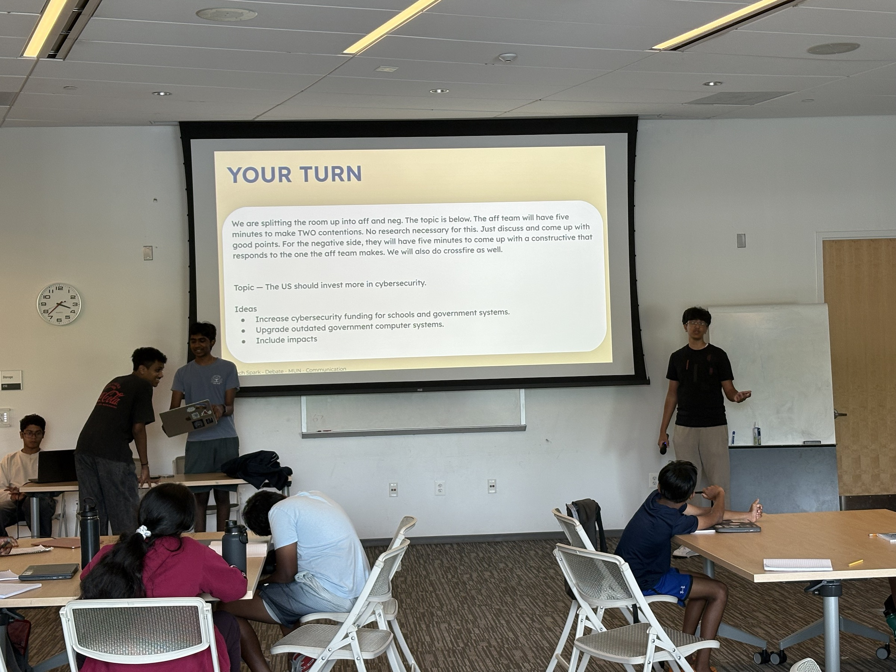
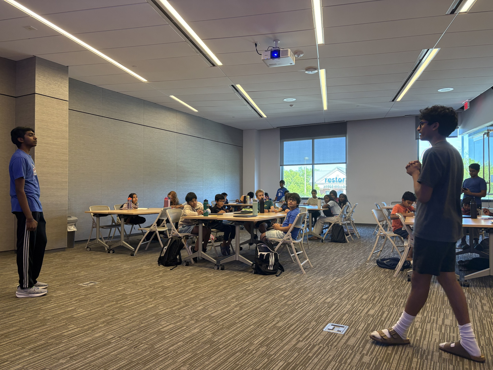

Debate
Students learn argument structure, rebuttals, speaking clearly, and thinking quickly on their feet.
Argue & reason
Student-Led Nonprofit
Speech Spark teaches debate, speech, Model UN, and communication through student-led camps and workshops. Programs are beginner-friendly, usually free, and built for young students taking their first steps as speakers.




Programs
Each program is structured for elementary and middle school students, especially beginners who want a supportive place to start.
Students learn argument structure, rebuttals, speaking clearly, and thinking quickly on their feet.
Argue & reasonStudents learn diplomacy, research, committee discussion, and global issue awareness.
DiplomacyStudents practice voice, posture, clarity, confidence, and presentation skills.
PresentStudents build confidence through group activities, teamwork, speaking games, and interactive practice.
Connect“Strong speakers learn to organize ideas, think clearly, and share their voice with confidence.”
Why public speaking mattersSpeech Camps
Each camp is a full speaking experience: warm-up games to make participation feel easy, real practice in debate and public speaking, and a final showcase where students see their own progress.

Students start with quick prompts and speaking games that make participation feel easier.
Students practice arguments, rebuttals, flowing, and thinking on their feet.
Students learn how to research, represent a position, and speak in a committee-style setting.
Students work on clarity, posture, voice, confidence, and audience awareness.
Small-group activities help students collaborate and become comfortable speaking with peers.
Students end with a practice round or presentation that shows their progress.
Camps are student-led, beginner-friendly, and usually free unless stated otherwise.
Our Impact
Figures reflect Speech Spark's reported reach across its chapters. Detailed program numbers are updated as new camps are completed.
Inside Our Camps
These photos show the actual workshop environment: presenting, learning, debating, and working in groups.





Chapters
Each Speech Spark chapter has its own local color while staying connected to the same core program. Explore the map, then browse the full directory.
Select a chapter on the map to see its details, or browse the directory below. International chapters are listed in the directory.
For Parents
Speech Spark is built for families who want clear details, easy registration, and a supportive learning environment.
Programs are designed mainly for elementary and middle school students.
Most programs are free unless a specific event says otherwise.
Students do not need prior debate, MUN, or public speaking experience.
Program cards clearly show dates, ages, and locations, with signup links.
Students bring water and a notebook. Event-specific details appear on each event card.
Parents usually do not need to stay; students often participate more confidently on their own.
Support Our Work
Speech Spark keeps camps free by running lean and leaning on people who believe in young voices. If that's you, a small gift goes a long way.
FAQ
Have another question? Reach out any time and a member of the team will help.
Most programs are designed for students around ages 6–13, mainly elementary and middle school students.
No. Students do not need prior debate, MUN, or public speaking experience.
Speech Spark programs are taught by student instructors and student volunteers.
Most programs are free unless a specific event says otherwise.
Students should bring water and a notebook. Any event-specific details appear on the event card.
Parents usually do not need to stay during the session. Students often participate more confidently when they practice independently, but parents can contact us with any questions.
Parents can register through the event links on the Camps page. Students can apply to start a chapter using the Start a Chapter form.
Join Speech Spark
Register for an upcoming camp, volunteer as an instructor, or start a chapter in your community.